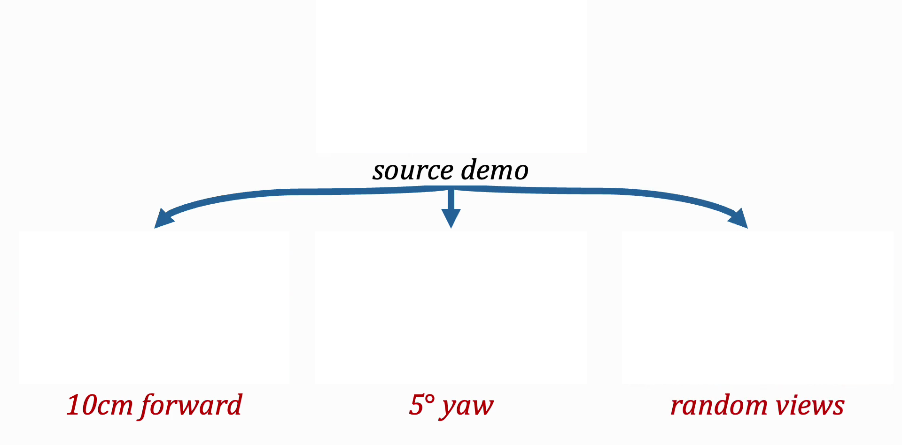

Method Overview
MobileVISTA takes single-pose manipulation demonstrations and produces training data covering a wide range of base poses, without collecting additional demonstrations. For each augmented trajectory, we sample a base perturbation and jointly synthesize (1) a pose-shifted egocentric observation and (2) a retargeted action sequence consistent with that observation.
Visual Observation Augmentation
We synthesize new egocentric visual observations via geometry-based reprojection: segment the robot from the scene, lift the remaining RGB-D into a colored point cloud, reproject from the perturbed egocentric camera, inpaint disoccluded regions, and re-render the robot at its retargeted joint configuration.
Action Retargeting
We retarget actions in end-effector space by applying the inverse base perturbation to each per-timestep end-effector goal, then solving inverse kinematics to recover joint commands that preserve the original end-effector trajectory.
Method Comparison
While prior work assumes either a camera fixed rigidly to the base or a view containing little robot geometry beyond a gripper, humanoids satisfy neither: the camera rides the actuated chain, so its pose is known only once inverse kinematics resolves a configuration for the retargeted action, and the robot kinematic chain is visible in frame, so synthesis must re-render articulated geometry rather than composite a rigid end-effector.
MobileVISTA targets cameras on the actuated chain, and synthesizes via explicit geometry rather than a per-domain fine-tuned video generator; prior methods satisfy at most one property.
| Method | Embodiment | Mobile base |
Camera on act. chain |
Robot vis. past gripper |
|---|---|---|---|---|
| VISTA | Single-arm | ✗ | ✗ | ✓ |
| RoVi-Aug | Single-arm | ✗ | ✗ | ✓ |
| ROPA | Biman. | ✗ | ✗ | ✓ |
| RoboSplat | Single-arm | ✗ | ✗ | ✓ |
| EgoDemoGen | Biman. | ✓ | ✗ | ✓ |
| 1001 Demos | Single-arm | ✗ | ✓ | ✗ |
| R2RGen | Single-arm, biman. | ✓ | ✗ | — |
| MobileVISTA (Ours) | Biman., humanoid | ✓ | ✓ | ✓ |
Example Augmented Dataset Trajectories
A single source demonstration becomes many augmented variants, each capturing what the same task would look like and require if the robot had started from a different base pose. The center shows the original canonical trajectory; the surrounding variants show various translation and rotation offsets.

Real-World Deployment
We evaluate MobileVISTA on a Galaxea R1 Pro humanoid on two real-world tasks against three baselines: Canonical-2D, DP3, and Fine-Tuned π0.5. We sample 25 base perturbations within a 15cm disk, deploying MobileVISTA and baselines in an unknown order from the same base pose, without repositioning.
Third-Person View
The robot sorts four laundry items into two bins by category: black socks into a grey bin, and a yellow towel and beige shorts into a green bin, and is notably challenging due to its long horizon and bimanual coordination of deformable objects.
MobileVISTA gets partial or full success across most offsets, while baselines stall, knock objects in the scene, or fail bimanual handoffs.

Each dot in the plot below represents one sampled offset (overhead view, cm), colored by outcome. Click any dot to load rollout videos.
Third-Person View
The robot grasps a vertically placed book and reorients it horizontally onto a stack inside a bookshelf. MobileVISTA succeeds across a wide range of offsets while all baselines collapse beyond the canonical pose.

Each dot in the plot below represents one sampled offset (overhead view, cm), colored by outcome. Click any dot to load the four corresponding rollout videos.
Comparison to Learned NVS
We compare MobileVISTA against GEN3C, a leading learned NVS model for 3D-consistent camera-controlled video generation. MobileVISTA consistently produces higher-fidelity observations across all four tested tasks, preserving sharp object boundaries and scene geometry, while GEN3C tends to blur edges and distort surfaces under larger viewpoint shifts. Below, we provide some qualitative comparisons of GEN3C and MobileVISTA against Oracle ground-truth renders.
Qualitative Comparison
Can Sort
Pouring
Box
Drawer
Drag sliders to compare with Oracle view.
PSNR Comparison
Policies trained on MobileVISTA-synthesized data consistently outperform those trained on GEN3C data, with downstream performance tracking PSNR reconstruction quality.
Each point shows the PSNR of a synthesized trajectory at its sampled base offset from canonical (cm, overhead view), measured against oracle simulator renders.
MobileVISTA yields higher PSNR overall, with the largest separation on the humanoid tasks — 10.2 dB and 8.9 dB on Can Sort and Pouring, versus 2.9 dB and 3.9 dB on Box and Drawer. Tasks where the two methods are closer in PSNR also demonstrate smaller gaps in downstream policy performance.
Policy Comparison
Downstream policy success rate as a function of NVS reconstruction quality (PSNR), for policies trained on MobileVISTA- vs. GEN3C-synthesized data.
Policies trained on MobileVISTA-synthesized data outperform those trained on GEN3C-synthesized data across tasks and perturbation magnitudes, consistent with MobileVISTA's higher reconstruction fidelity. Beyond reconstruction quality, NVS-based approaches like GEN3C treat the robot as part of the static scene, while MobileVISTA instead re-renders the robot under retargeted actions and composites it with a geometry-consistent background.
Simulation Validation
We evaluate MobileVISTA across four simulated tasks on two embodiments: Can Sort and Pouring on a Fourier GR-1 humanoid, and Box and Drawer on a bimanual Franka. MobileVISTA consistently outperforms all baselines across tasks and perturbation magnitudes, maintaining higher success rates than all baselines as perturbation magnitude grows.
Results against Baselines
Success rate vs. base perturbation magnitude for MobileVISTA and baselines, across the four simulated tasks and two embodiments described above.
Canonical-2D degrades rapidly as the perturbation radius grows, averaging under 45% success at just 3cm across all tasks. DP3, which trains on explicit 3D scene representations (point clouds) rather than RGB images, and Fine-tuned π0.5, which fine-tunes a large-scale pretrained policy on the same canonical demonstrations, each match or only modestly improve on Canonical-2D, and show similarly limited generalization as the perturbation magnitude increases. This indicates that 2D training, explicit 3D representations, and large-scale pretrained initialization are each individually insufficient for robust pose generalization — only MobileVISTA sustains strong performance as the offset grows, across both the humanoid GR-1 and the non-humanoid bimanual Franka.
Ablations
We ablate the two components of MobileVISTA. Aug. Images Only pairs augmented observations with the original canonical actions; Aug. Actions Only pairs canonical observations with retargeted actions; Fixed Robot Geom. reprojects the entire scene without segmenting and re-rendering the robot, treating it as static scene content. Augmenting either modality in isolation consistently degrades performance, and omitting robot re-rendering costs the most on tasks where the robot occupies much of the egocentric frame.
Success rate when ablating each MobileVISTA component, relative to the full method, across the four simulated tasks.
MobileVISTA outperforms nearly all ablated variants, indicating that jointly augmenting visual observations and actions, together with explicit robot re-rendering, contributes to pose robustness. Omitting robot-consistent rendering (Fixed Robot Geom.) causes performance to drop substantially in most tasks, suggesting that rendering accurate robot geometry after retargeting is critical for maintaining in-distribution egocentric observations.